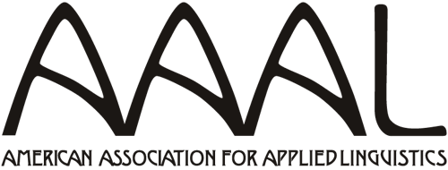
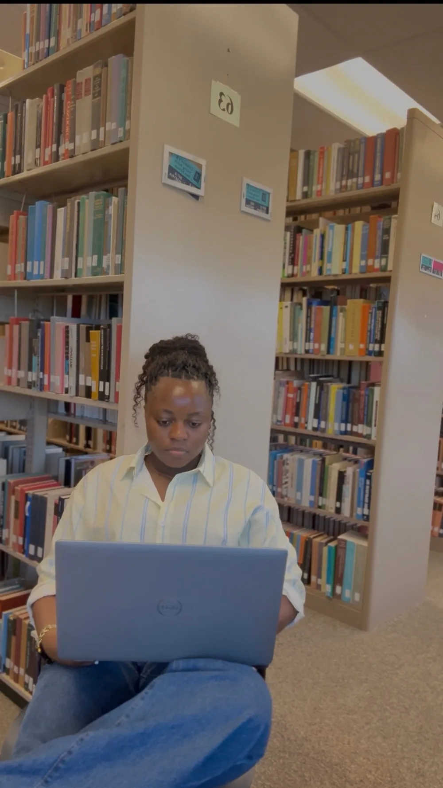
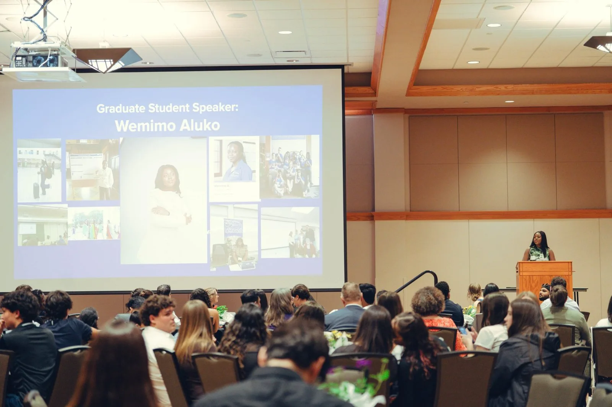
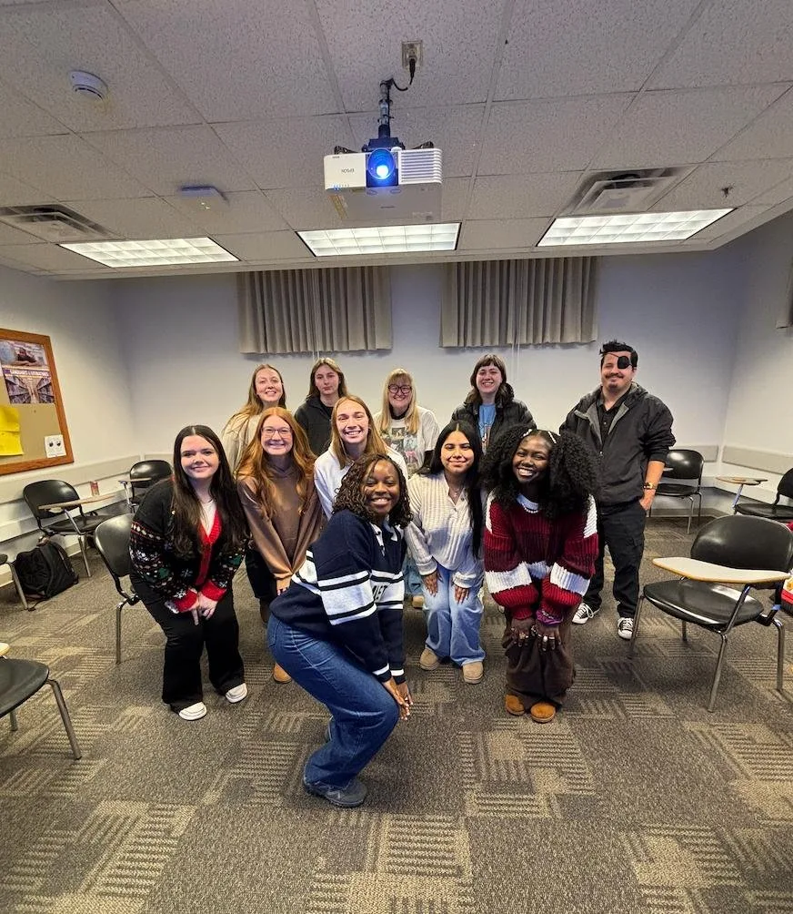

Applied Linguist, Researcher & Language Educator
Wemimo Aluko is an applied linguist and researcher who studies how multilingual people learn and use language in real life: in writing, in speech, and on social media. Her research spans second-language writing, pronunciation and intelligibility, translanguaging, and AI-assisted language learning, and her work on translanguaging among Nigerian influencers will be presented at AAAL and TESOL International in 2027.
She brings that research into the classroom and into learning design. She teaches first-year college reading and writing at East Texas A&M University, has more than four years of experience teaching English to multilingual learners in Nigeria and the United States, and designs courses and lesson materials that help learners write and speak with confidence.

Conferences and universities

AAAL 2027 · Presenting- TESOL 2027 · Presenting
 EPIP9 · Presented
EPIP9 · Presented- SLA Symposium · Presented
- Exhibited
- Teaching
- M.A. · Taught
- B.A. · Taught
Research
Researching how multilingual people use language in real life
Her master's thesis examined 120 videos from six Nigerian TikTok and Instagram influencers to show how they move between English, Nigerian Pidgin, and Yoruba to build authority, express identity, and reach Nigerians abroad. As a research assistant, she has worked on explicit pronunciation instruction and intelligibility, and on the pragmatics of Chinese kinship and address terms.

Teaching
Teaching that builds confident writers and speakers
As teacher of record for two sections of ENG 1301 College Reading and Writing at East Texas A&M University, she guides 45 first-year students through rhetorical analysis, literacy narratives, and discourse analysis, with a draft, feedback, and revision cycle at the heart of every unit.
Before this, she taught TESOL 2015 Language Today at the University of Northern Iowa, adult ESL at Hawkeye Community College, and English courses at Osun State University and High Flier College in Nigeria.

Learning Design
Courses and lessons learners can use
Write Your Way In is a four-module online course that helps multilingual learners plan, draft, revise, and edit academic writing in English, using all the languages they know. Alongside it are ready-to-teach ESL lessons with plans, slides, and handouts, built from her Instructional Design training at the University of Illinois Urbana-Champaign.

Work Together
Let's work together
Wemimo welcomes collaborations in language teaching, curriculum and learning design, and research on AI for language learning, as well as invitations to speak at conferences, workshops, and webinars.
Newsletter
Subscribe to my newsletter
Occasional notes from my classroom and research: practical ideas for teaching writing and speaking, plain-language summaries of research on multilingual learners and AI, free lesson resources, and conference news.
If you teach, study, or care about how people learn languages, this newsletter is for you.